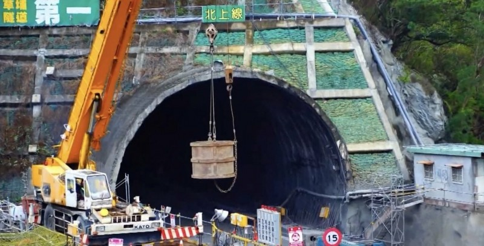
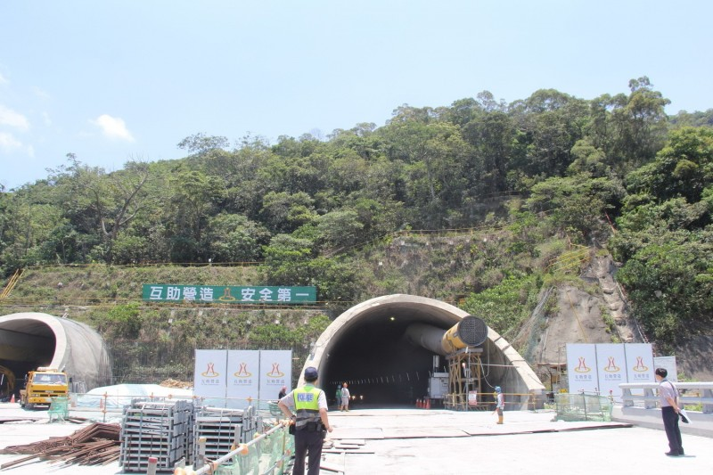
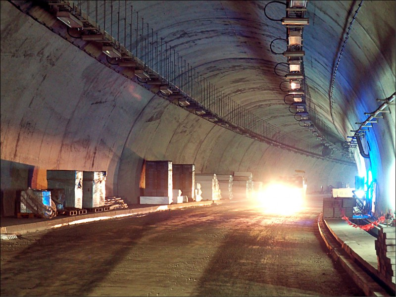

圖片+文字
［記者陳賢義／台東報導］台東南迴公路台九線拓寬改善工程12月20日全線通車，
但通車在即，針對唯一、全長4.6公里的隧道，（公路總局依工程起處原命名草埔隧道）正名爭議仍餘波蕩漾，
台東達仁及屏東獅子2鄉日前再協商，達仁提議更名為「草埔森永」，但不被獅子鄉代表會接受，難達共識再破局，
公路總局西濱南工處近日將再召開協調會，盼能有好結果。
為解決隧道命名爭議，西濱南工處本月25日再召集2鄉代表團協議，
達仁鄉提議正名為「草埔森永」，獅子鄉代表團否決破局。
獅子鄉長周英傑表示，正名爭議交由草埔村民決定，
倘若能接受「草埔森永」自然是皆大歡習，但仍要遵尊重地方，
相反的達仁鄉若能接受草埔或草埔排灣，也能避免紛爭延續。


